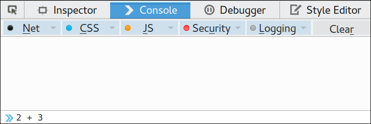
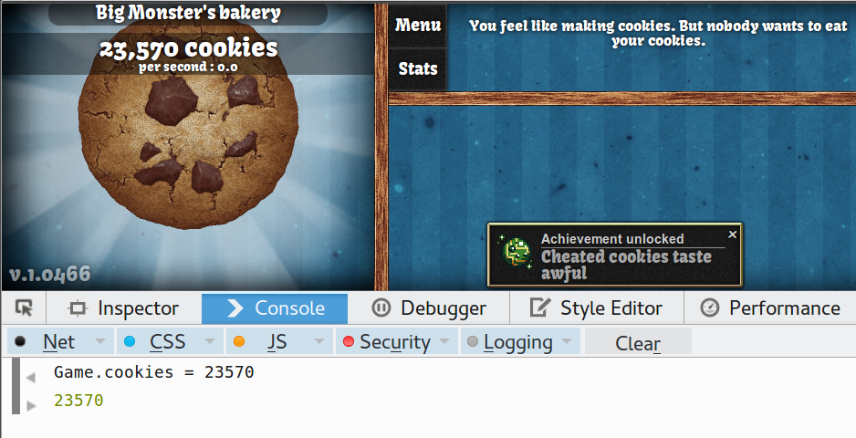
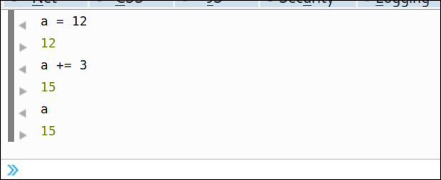
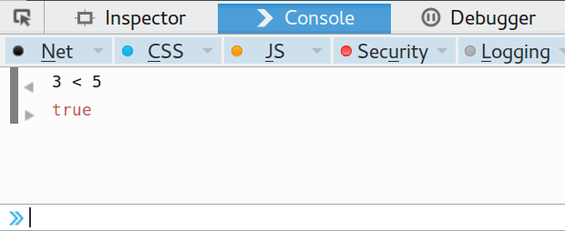

Give a short presentation about maths and Javascript.
Javascript has many uses on the web from games, to chat pages, shopping etc.
Most of these uses involve using numbers and maths.
A game which uses numbers and maths is Cookie Clicker . Have you tried it?
Javascript uses variables to rememeber and work with data. In the last session we were using variables to store the names of things.
In this game Javascript variables are used to keep track of how many cookies we have created.
Each time we click the cookie the number value of the variable goes up by one, simples!
15
min
Activity One - Use the console to play with number variables
Split learners into groups of 2 or individuals if there enough computers explain that we will use the console to find out more about how
numbers and maths are done in Javascript.
Ask individuals / groups to follow these instructions:
Open Firefox (or other browser)
Press F12 to bring up some tools
Click on Console
Press F12, find the Console and enter the following commands

Press F12, find the Console type the following commands into the Console and press the Enter key.
2 + 3
5 - 3
7 * 3
8 / 2
var a = 12
var b = 3
a / b
"2" + "3"
"hello " + "derek"
2 + “3”
The simple way to do adding, subtracting, multipliction and division is to user the following Javascript maths Operators?
+ Add Operator
- Subtract Operator
* Multiply Operator
/ Divide Operator
5
min
Discussion: Why does 2 + 3 give a different result to "2" + "3"
Wait what is happening? What are the answers to 6 and 8 different from what we got for 1?
The answers to 1,6,8 are different because we are adding variables of different types of data.
We say that the variable has a different Datatype.
2 s a datatype of number: Numbers are used for maths and calculations
“2” is a datatype of String: Strings are used to hold mostly text based data, names and addresses are common examples.
The easy way to tell the difference between a value of type number and String is by noticing if the quotation marks ("") are used.
Using the + operator has a different effect with strings and number variables. It adds together numbers with addition but strings get put next to each other like being stuck together end to end with glue. In coding this is called "concatenation".
Be careful!: If we use + with a string and a number, then both the string and number are treated as strings so the the result is a string.
15
min
Activity Two - Create an online, international T-Shirt Shop
Read the instructions in the code we can change a page to add JavaScript to add a price of the T-Shirt in Euros to the page.
Support Tip:
If one TShirt was £7.60 and Euros were 0.67 to the pound you work this out by multiplying the £7.60 x 0.67
10
min
Activity Three - Hacking Cookie Clicker
In your browser go to cookie clicker game website
Press F12 - go to the console and Enter
Game.cookies = 23570

Cheated Cookies taste just as sweet!
What happens? The equal sign assigns the number value on the right to the variable on the left (Game.cookies). Because this variable is what is used by the cookie clicker game to keep a track of your score, the number used on the game goes up on your page. Amazeballs! You've hacked it!
Smooth Operators
There are other operators we can use too. What about if we wanted to add on 10 cookies to our total?
How about we want to take 100 cookies off of our total? Find out how to do this by entering the following instructions in the console window when you are playing cookie clicker.
Game.cookies += 10
Game.cookies -= 100
Game.cookies *= 4
We can see that if we put a plus sign infront of our equals sign that it add on the number on the right to the current value of the variable on the left. We call this an addition assignment operator. The same idea works for subtracting, mulitplying etc.
Operator...
Example...
Meaning...
+=
a += 10
Increase the value of variable a by 10
-=
x -= 5
Reduce the value of variable x by 10
*=
y *= 10
Multiply the value of variable y by 10
/=
z /= 2
Divide the value of variable z by 2
++
z++
Add 1 to the value of variable z
--
z--
Subtract 1 from the value of variable z
To test out that you understand these new operators, use the console and try some examples like the one below.

5
min
Bonus Activity - Comparing Numbers
In your browser
Press F12 - and Enter
Press F12
Go to the console and type
3 < 5
Press Enter

What happens? It gives us back a value of True. Why? Well the short answer is that the statement means in English - Three is less than 5 - and that *is* true.
The longer answer is that if we enter a statement in the console that could be either true or false, then the system will evaluate it and return the answer. Why? Because as programmers, this true / false thing can be very useful to us. As we will find out later in these sessions.
In fact, having a variable of a type that is only true or false is so useful there is a dedicated Data Type called Boolean that does exactly that.
Right now we don't need to know a lot about how these true /false values are useful but if you do want to find out more about Boolean values
you can read about them here
If you have not seen the < operator in maths, it means "is less than". It is one of a list of operators we use to compare different values or variables.
Comparison Operators
Operator...
Meaning...
Example...
===
equal to
(2 + 5) === 7
>
greater than
8 > 5
<
less than
3 < 5
5
min
What have we learned?
There was a lot of things to learn in this session. A lot if it is quite quick to pick up but a discussion at the end to recap what we have learned is a great idea to check we are all on the path.
We've learned about the different Data Types of Number, String and Boolean in Javascript and what we use them for.
We've learned about how use Arithmetic Operators, Assignment Operators and Comparison Operators eg. *, += and >
And hopefully we've learned how to make a pointless game like Cookie Clicker even more pointless by cheating!